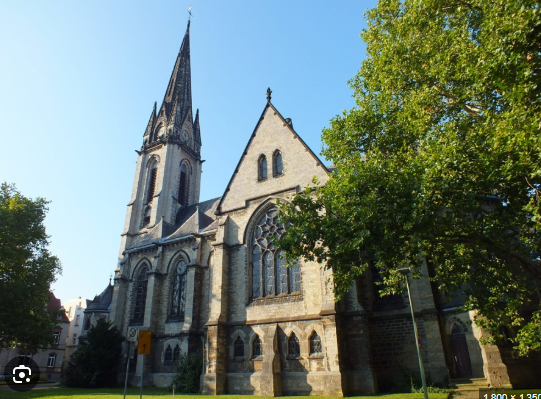

Bureau de District · Active
Paroisse de
Bafang Centre.
Fidèles
1 240
Ouvriers
14
Œuvres
3
Ouvriers ecclésiastiques
14 membresWS
Pasteur WAMBA Samuel
Pasteur Titulaire
Depuis 2018
NN
Diacre NGOUFFO Noé
Diacre Principal
Depuis 2020
TM
Catéchiste TCHOUMI Marie
Catéchiste
Depuis 2015
FK
Pasteur Stagiaire FOWE K.
Pasteur Stagiaire
Depuis 2024
Œuvres sociales
3 structuresÉcole Primaire EEC Bafang246 élèves · Classes P1–P6 · Depuis 1952
Actif
Centre de santé paroissialConsultations générales · Maternité · Depuis 1968
Actif
Terrain paroissial2 ha · Zone industrielle de Bafang · À valoriser
Projet
Galerie photos
12 photos
